What each toner does
Sepia is strong. At the top of its slider it turns the whole print a deep yellow-brown, most of all in the middle tones, and tints the paper's white faintly cream. At a quarter of the slider it is already plain to see.
Selenium is faint. At the top of its slider it adds a slight purple to the shadows and middle tones that few people would notice without the untoned print beside it, and at a quarter of the slider it cannot be seen at all. So that a top that shows could be chosen, each scene has a second selenium row at two, three and four times that top. Those strengths are not in the app: they are the same toner made stronger, shown here because they were part of the choice. Even at four times, selenium moves a print's color less than sepia does at half of its slider.
Both toners leave a print's brightness nearly as it was, and selenium leaves the paper's white alone. Neither is matched to a toned darkroom print: none was found under an open license with its toner on record, so there is no reference print on this board.
How far each toner moves a print's color
| Strength | Sepia: shadows | Sepia: middle tones | Sepia: light tones | Selenium: shadows | Selenium: middle tones | Selenium: light tones |
|---|---|---|---|---|---|---|
| 0.25 | 4 | 6 | 4 | none | under 1 | none |
| 0.50 | 9 | 14 | 8 | under 1 | 1 to 2 | under 1 |
| 0.75 | 13 | 23 | 13 | 1 | 2 | 1 |
| 1.00, today's top | 19 | 34 | 18 | 1 | 3 | 2 |
| 2.00 | not shown | not shown | not shown | 3 | 6 | 4 |
| 3.00 | not shown | not shown | not shown | 4 | 8 | 5 |
| 4.00 | not shown | not shown | not shown | 5 | 11 | 7 |
Color differences from the untoned print in CIELAB units, as the mean over the five scenes of this board. About 2 is the least an eye picks out side by side, and 10 is plain at a glance.
Every scene
Open any print at its full board size by selecting it. A strength is a share of today's top, so 1.00 is the strongest the slider gives today.
Skin tonesNatural-light portrait: older woman, light skin Shixart1985 · CC BY 2.0 · source

Sepia


Selenium


Selenium, stronger than today's top


Skin tonesNatural-light portrait: two boys, dark skin (beach daylight) Mark Fischer · CC BY 3.0 · source
.jpeg){kind=link}
Sepia


Selenium


Selenium, stronger than today's top

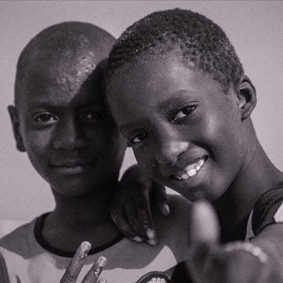

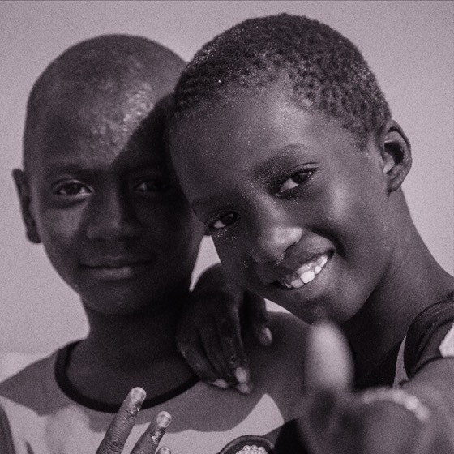

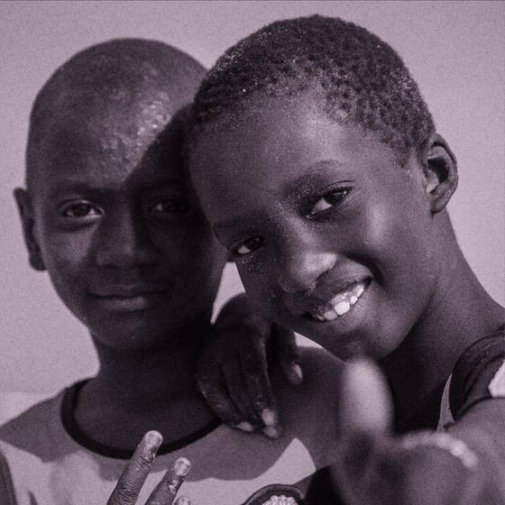
Night or dim, no flashDim night street with street lamps, no flash (Google Pixel 7) Eden, Janine and Jim from New York City · CC BY 2.0 · source
.jpg){kind=link}
Sepia


Selenium


Selenium, stronger than today's top

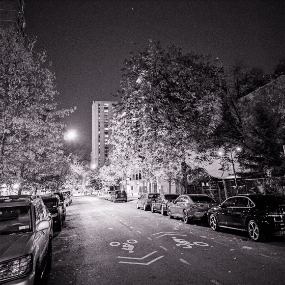

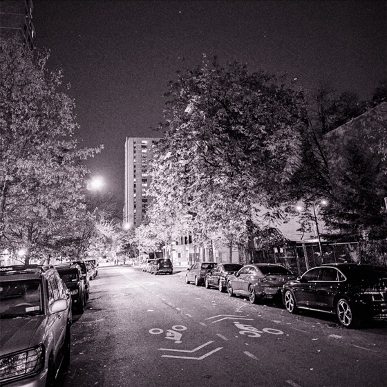

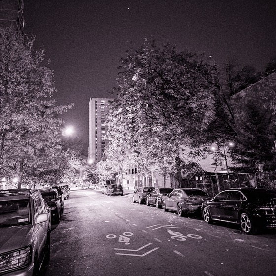
DayPeople playing capoeira in a city park (iPhone 13) Benoît Prieur · CC0 · source
_May_2023_(1).JPG){kind=link}
Sepia


Selenium


Selenium, stronger than today's top

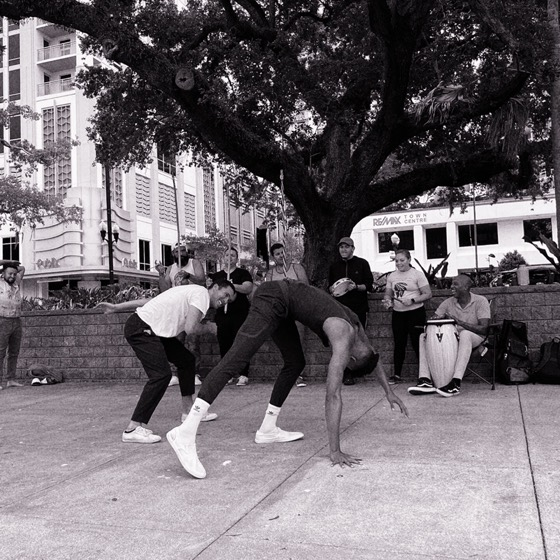

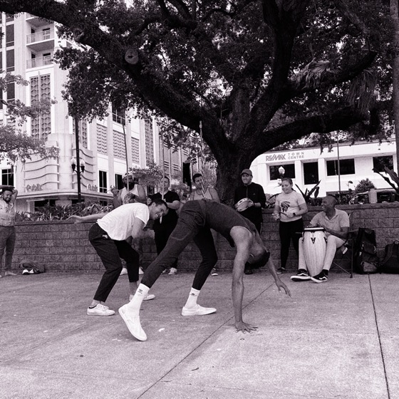

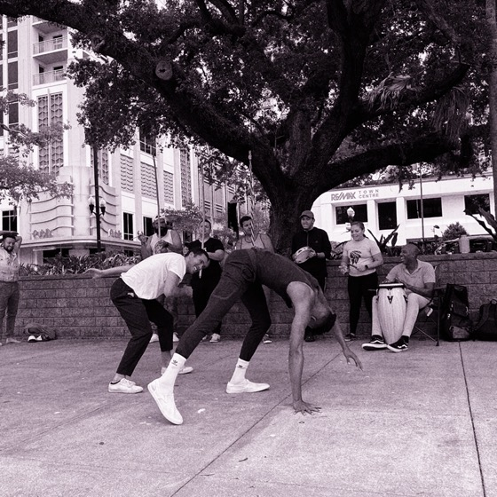
Bright highlightsBacklit interior with bright windows (iPhone 13 Pro) Y.ssk (requested credit line: 'Y.ssk / Wikimedia Commons / CC BY-SA 4.0') · CC BY-SA 4.0 · source

Sepia

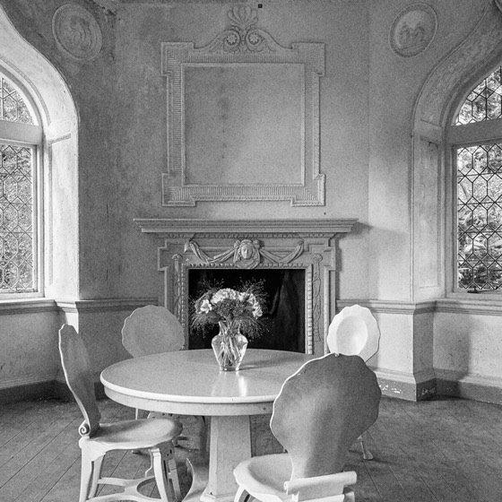

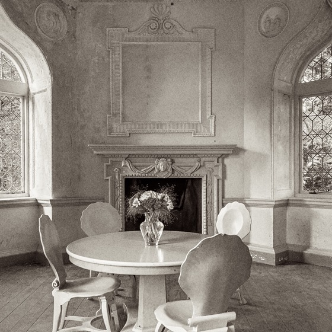

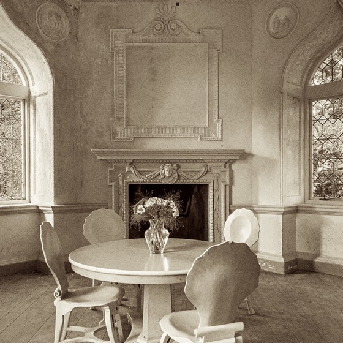

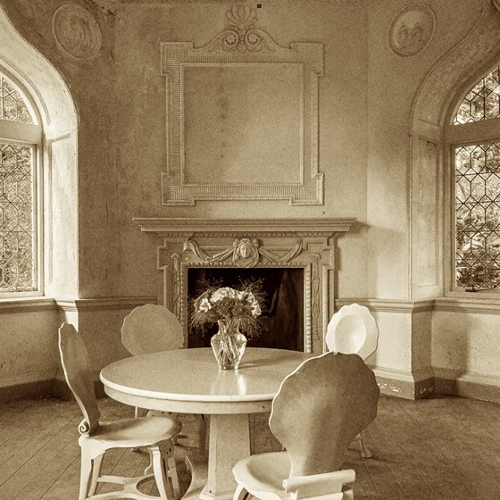

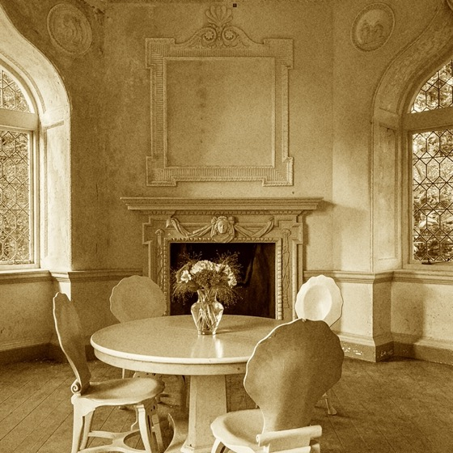
Selenium


Selenium, stronger than today's top

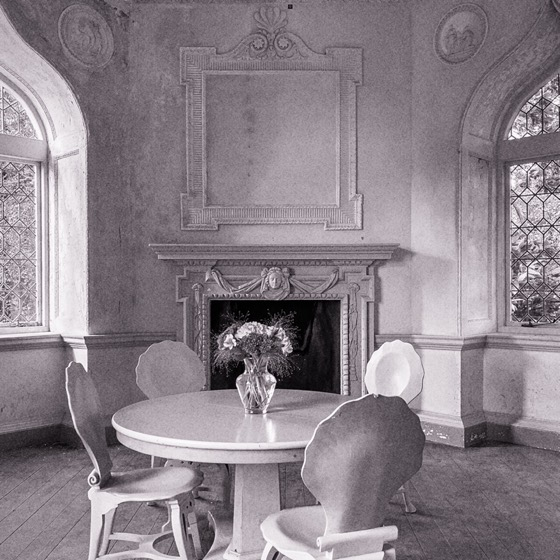

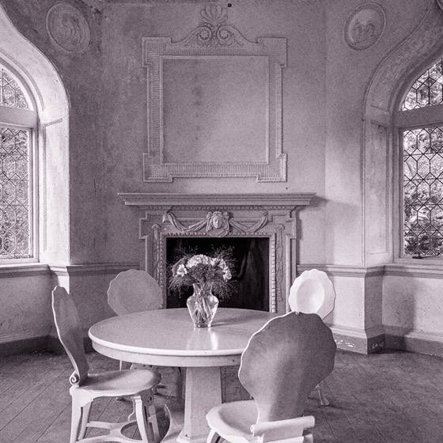

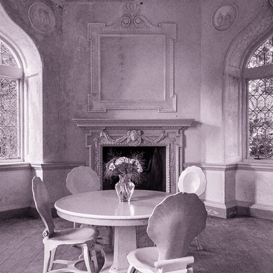
Values in the app
From ToningLook.swift: the one place the toners are set. Your choices become each toner's start and top.
struct Toner: Equatable {
/// The strength at the slider's low end.
var start: Double
/// The strength at the slider's top.
var top: Double
/// The strength the slider gives where it stands, from 0 to 1.
func strength(at amount: Double) -> Double { start + (top - start) * amount }
}
/// Sepia: a warm brown through every tone, strongest in the middle tones, with the paper's white turned faintly
/// cream.
static let sepia = Toner(start: 0, top: 1)
/// Selenium: a slight cool purple in the shadows and middle tones that leaves the paper's white alone.
static let selenium = Toner(start: 0, top: 1)
/// How much selenium changes each channel's light at a strength of 1: red and blue up and green down, which is
/// purple. The change is weighted to the darker tones and is nothing at the paper's white.
static let seleniumTint = FilmLook.RGB(1.04, 0.94, 1.02)